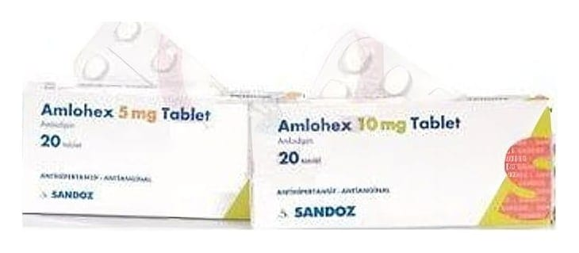

Amlohex 10 mg Tablet, 30 Adet

Ne için kullanılır
KT · Bölüm 1• AMLOHEX ağız yolu ile alınır ve her tablet 10 mg amlodipine eşdeğer amlodipin maleat içerir. Kalsiyum antagonistleri olarak bilinen ilaç grubuna dahildir. • AMLOHEX 20 ve 30 tabletlik blister ambalajda bulunur. • AMLOHEX yüksek kan basıncının (hipertansiyon) veya angina adı verilen belirli tip göğüs ağrısının tedavisinde kullanılan bir ilaçtır. • Hipertansiyon: Yüksek kan basıncı, kanın damarlara yaptığı baskıdan oluşur. AMLOHEX damarların genişlemesini, kanın damarlarda daha kolay dolaşmasını sağlayarak kan basıncını düşürür. • Angina, kalp kasımn bîr kısmma yeterli kan gitmediğinde oluşan ağrı veya rahatsızlık hissidir. Angina genellikle göğüs bölgesinde baskı veya sıkıştırıcı ağrı şeklinde hissedilir. Bazen bu ağrı kollarda, omuzlarda, boyunda çenede veya sırtta da hissedilir. AMLOHEX bu ağrıyı geçirebilir.